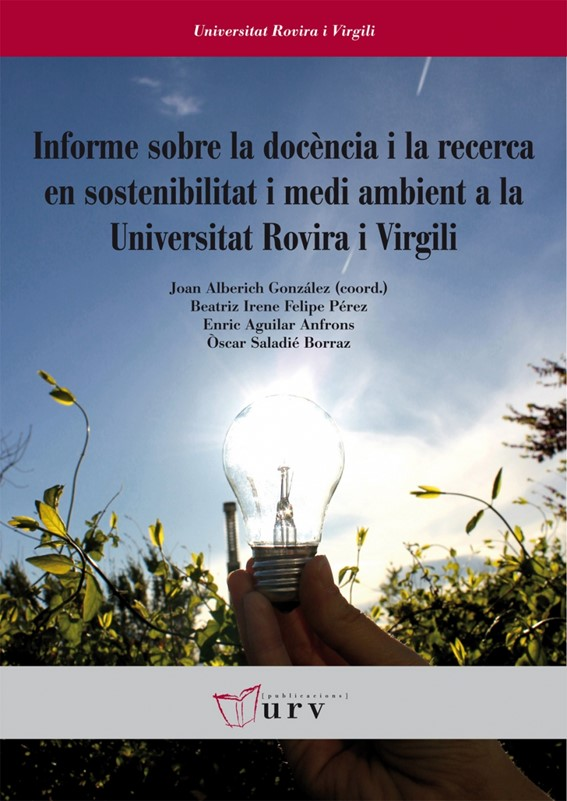

Aquest projecte analitza l'alineació dels programes acadèmics de la Universitat Rovira i Virgili amb els Objectius de Desenvolupament Sostenible (ODS) de les Nacions Unides. El plantejament inicial d'aquest estudi es basa en dues referències principals: l'Informe sobre la docència i la recerca en sostenibilitat i medi ambient a la Universitat Rovira i Virgili d'Alberich J. et al. (2012), i l'estudi "La sostenibilidad en los grados universitarios: presencia y coherencia" de Bautista-Cerro Ruiz, M. J., & Díaz González, M. J. (2017).

En aquesta ocasió, a iniciativa del Dr. Jordi Diloli, Vicerector de Compromís Social i Sostenibilitat de la URV, i del Sr. Antonio de la Torre López, Tècnic de Gestió Ambiental de l’Oficina d’Igualtat i Compromís Social de la URV, s’encarrega a investigadors del Departament de Geografia la innovació metodològica de l’anàlisi de com d’alineats es troben els programes acadèmics de la URV amb els ODS. A més dels treballs citats i que ens han valgut de punt de partida, s’ha actualitzat la metodologia per fer-la més sistemàtica i automatitzada, que s'ha aplicat a totes les assignatures dels ensenyaments de grau i màster de la URV.
Aquest nou mètode d’anàlisi ha de donar compliment al punt 2 de l’article 4 del Decret Llei 822/2021, de 28 de setembre, pel qual s’estableix l'organització dels ensenyaments universitaris i dels procediments de seguiment de la seva qualitat. Aquest article estableix que els plans d’estudi hauran de tenir com a referent els principis i valors democràtics i els Objectius de Desenvolupament Sostenible.